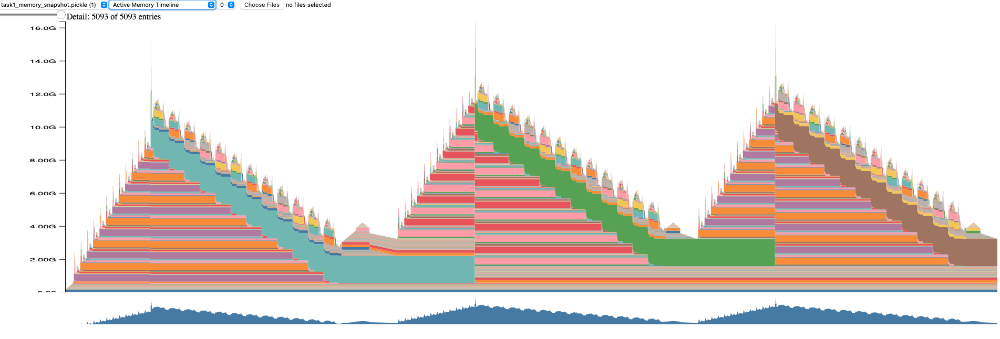

Introduction
This study presents a comprehensive analysis of distributed training strategies for large language models using PyTorch. Three distributed training approaches—Data Parallel (DDP), Fully Sharded Data Parallel with full parameter sharding (FSDP-Full/ZeRO-3), and FSDP with gradient sharding only (FSDP-Grad/ZeRO-2)—were implemented and evaluated against a single-GPU baseline. Experiments conducted on a 2x H100 SXM5 Lambda instance training GPT-2 Large (774M parameters) reveal that FSDP-Grad achieves 97.71% compute efficiency, nearly matching single-GPU performance while providing memory savings and enabling larger-scale training.
Training large language models has become increasingly challenging as model sizes grow from millions to billions of parameters. A GPT-2 Large model with 774M parameters requires approximately 12GB of GPU memory for training on a single GPU. This memory consumption breaks down as follows: model parameters stored in FP32 format consume ~3GB (774M × 4 bytes), gradients of the same size add another ~3GB, optimizer states (momentum and variance for AdamW) require ~6GB (2× parameters in FP32), totaling ~12GB for the model states alone. Additionally, activation tensors saved during the forward pass for backpropagation require extra memory that scales with batch size and sequence length. As models scale to billions or trillions of parameters, this linear memory growth makes single-GPU training infeasible, necessitating distributed training strategies.
This comprehensive study aims to: (1) Implement and compare three distributed training strategies: DDP, FSDP-Full (ZeRO-3), and FSDP-Grad (ZeRO-2); (2) Analyze memory consumption, throughput, and communication patterns for each approach; (3) Profile GPU utilization, compute vs. communication time, and operator-level performance; and (4) Provide practical recommendations for choosing the optimal strategy based on model size and hardware constraints.
The experimental setup utilized a GPU 2x H100 SXM5 Lambda instance with 2x NVIDIA H100 GPUs (80GB HBM3 each) connected via NVLink/NVSwitch for high-bandwidth GPU-to-GPU communication. The model configuration consisted of GPT-2 Large architecture with 774,439,808 parameters, sequence length of 1024 tokens, global batch size of 32, micro batch size of 8 per GPU, 20 training steps, and learning rate of 3e-4 with cosine annealing. The software stack included PyTorch 2.x with CUDA support, uv for Python package management, NCCL (NVIDIA Collective Communications Library) as the distributed backend, and PyTorch Profiler with Chrome trace export for profiling.
Challenges in Distributed Training vs. Single GPU Training
Memory Constraints
Single GPU Training
Training a neural network on a single GPU requires storing:
- Model Parameters (W): Original weights
- Gradients (∇W): Same size as parameters
- Optimizer States (O): For Adam/AdamW, stores first and second moments (2x parameter size)
- Activations (A): Intermediate outputs saved for backward pass
For GPT-2 Small (124,439,808 parameters, or ~124M) with mixed precision training:
Parameters: 474.70 MB (124M × 4 bytes in FP32)
Gradients: 474.70 MB (same size as parameters)
Optimizer States: 949.40 MB (FP32: momentum + variance = 2× parameters)
Total Estimated: 1,898.80 MB
Actual Peak: 3,076.27 MB (includes activations and overhead)The parameter memory calculation: 124,439,808 parameters × 4 bytes (FP32) = 497,759,232 bytes ≈ 474.70 MB. Despite using mixed precision (FP16 for forward/backward passes), the optimizer maintains an FP32 master copy of weights, so the base parameter storage is FP32.
The 1,177.47 MB difference between estimated and actual memory comes from:
- Activation tensors stored during forward pass (~800-900 MB)
- Temporary buffers for operations
- PyTorch framework overhead
- Memory fragmentation
Distributed Training Challenges
When scaling to multiple GPUs, new challenges emerge:
1. Data Parallelism Memory Replication Traditional DDP replicates the entire model on each GPU, which doesn’t reduce per-GPU memory usage—it only enables larger batch sizes.
2. Communication Overhead Distributed training introduces collective communication operations: - All-Reduce: Synchronize gradients across all GPUs (DDP) - All-Gather: Collect sharded parameters/gradients from all GPUs (FSDP) - Reduce-Scatter: Reduce and distribute results across GPUs (FSDP)
3. Synchronization Barriers GPUs must wait for each other at communication points, potentially causing idle time if workloads are imbalanced.
4. Network Bandwidth The data transfer rate between GPUs, measured in GB/s (gigabytes per second). Higher bandwidth enables faster gradient/parameter synchronization. H100s use NVLink (900 GB/s bidirectional), allowing near-simultaneous compute and communication. Lower bandwidth (e.g., PCIe: 32 GB/s) creates bottlenecks where GPUs wait idle during all-reduce/all-gather operations.
5. Load Balancing Uneven data distribution or computational load can cause some GPUs to finish early and wait idle.
Communication vs. Computation Trade-off
The fundamental challenge in distributed training is hiding communication latency behind computation. Ideal distributed training achieves:
Compute Efficiency = (Compute Time) / (Total Time) × 100%Where Total Time = Compute Time + Communication Time + Idle Time.
Single GPU Baseline: - Compute: 97.87% - Communication: 1.16% (memory transfers, kernel overhead) - Idle: 0.97%
Distributed Training Goal: Match or approach baseline efficiency while enabling: - Training models that don’t fit on a single GPU - Faster training through data parallelism - Flexibility to scale to larger clusters
Gradient Accumulation and Synchronization
Single GPU Approach
Gradient accumulation simply accumulates gradients over multiple micro-batches before updating weights:
for micro_batch in range(grad_accumulation_steps):
loss = forward_backward(micro_batch)
loss.backward() # Accumulate gradients
optimizer.step() # Update weights
optimizer.zero_grad()Distributed Training Synchronization
Must decide when to synchronize gradients:
- Synchronizing every micro-batch wastes bandwidth
- Using
no_sync()context manager prevents unnecessary all-reduce operations - Only synchronize on the last micro-batch of gradient accumulation
Here’s the optimized approach:
for i, micro_batch in enumerate(batches):
is_last = (i + 1) % grad_accumulation_steps == 0
if not is_last:
with model.no_sync(): # Skip gradient synchronization
loss.backward()
else:
loss.backward() # Synchronize gradients across GPUsThis optimization reduces communication overhead significantly. The experimental results show that DDP with proper gradient accumulation achieves 97.36% compute efficiency.
Memory Sharding Strategies
To overcome memory limitations, Fully Sharded Data Parallel (FSDP) implements the ZeRO (Zero Redundancy Optimizer) approach:
| Component | DDP (No Sharding) | FSDP-Grad (ZeRO-2) | FSDP-Full (ZeRO-3) |
|---|---|---|---|
| Parameters | Replicated | Replicated | Sharded |
| Gradients | Synchronized | Sharded | Sharded |
| Optimizer States | Replicated | Sharded | Sharded |
| Memory per GPU | 100% | ~67% | ~33% |
| Communication | All-Reduce | All-Gather (grads) | All-Gather (params) + Reduce-Scatter (grads) |
For GPT-2 Large on 2 GPUs: - DDP: 12GB per GPU (no savings) - FSDP-Grad: ~8GB per GPU (1.5x reduction) - FSDP-Full: ~4GB per GPU (3x reduction)
More aggressive sharding reduces memory but increases communication frequency and complexity.
Distributed Training Approaches
Baseline: Single GPU Training
The baseline implementation serves as the reference point for performance comparison.
Implementation (train_baseline.py):
# Device setup
device = "cuda" if torch.cuda.is_available() else "cpu"
# Model initialization
config = AutoConfig.from_pretrained("gpt2-large")
model = MyGPT2LMHeadModel(config)
model.init_weights()
model = model.to(device)
# Gradient accumulation to match distributed global batch size
global_batch_size = 32
micro_batch_size = 8
grad_acc_steps = global_batch_size // micro_batch_size # 4 steps
# Training loop with gradient accumulation
for batch in dataloader:
loss = model(batch)
scaled_loss = loss / grad_acc_steps
scaled_loss.backward()
if (step + 1) % grad_acc_steps == 0:
optimizer.step()
optimizer.zero_grad()Key Characteristics:
- Simple, straightforward implementation
- No communication overhead
- Limited by single GPU memory capacity
- Serves as performance upper bound (97.87% compute efficiency)
Performance Metrics:
Training Time: 112.3s for 20 steps
Peak Memory: 3,076 MB
Compute Efficiency: 97.87%
Throughput: 32,582 tokens/sec (batch size 8)Data Parallel (DDP)
Concept
DDP replicates the model on each GPU and synchronizes gradients after the backward pass using an all-reduce collective operation.
How It Works:
- Each GPU maintains a complete copy of the model
- Each GPU processes a different subset of the data (data parallelism)
- After backward pass, gradients are averaged across all GPUs using all-reduce
- All GPUs update their models identically using synchronized gradients
Implementation
import torch.distributed as dist
from torch.nn.parallel import DistributedDataParallel as DDP
# Initialize distributed process group
dist.init_process_group(backend='nccl')
rank = dist.get_rank()
world_size = dist.get_world_size()
local_rank = int(os.environ['LOCAL_RANK'])
# Set device for this process
torch.cuda.set_device(local_rank)
device = f'cuda:{local_rank}'
# Critical: All ranks must use same seed for identical initialization
torch.manual_seed(42)
torch.cuda.manual_seed(42)
# Create model and wrap with DDP
model = MyGPT2LMHeadModel(config)
model.init_weights()
model = model.to(device)
model = DDP(model, device_ids=[local_rank])Key Implementation Detail: Gradient Synchronization with no_sync()
From distributed_trainer.py:
def training_step(self, inputs, targets, should_sync: bool):
"""
Training step with DDP no_sync support.
Key concept: For gradient accumulation, we only sync gradients
on the last micro-batch to avoid unnecessary communication overhead.
"""
# Forward pass
logits = self.model(inputs)
loss = nn.functional.cross_entropy(
logits.view(-1, logits.size(-1)),
targets.view(-1)
)
# Backward with conditional synchronization
scaled_loss = loss / self.grad_accumulation_steps
if self.ddp_enabled and not should_sync:
# Don't sync gradients for intermediate micro-batches
with self.model.no_sync():
scaled_loss.backward()
else:
# Sync gradients on last micro-batch (triggers all-reduce)
scaled_loss.backward()
return lossno_sync() Matters
Without this optimization, DDP would perform all-reduce after every backward() call:
- With 4 micro-batches per step: 4 × all-reduce operations
- With
no_sync(): Only 1 all-reduce operation (on the last micro-batch) - Result: 4x reduction in communication overhead
Communication Pattern
- Operation: All-Reduce (averages gradients across all ranks)
- Frequency: Once per gradient accumulation cycle (every 2 micro-batches with 2 GPUs)
- Data Volume: All gradient tensors (~475 MB)
- NCCL Implementation: Ring all-reduce algorithm
Performance Metrics
Training Time: 58.3s (1.93x speedup over baseline)
Communication Overhead: 105.3 ms
Compute Efficiency: 97.36%
Communication Overlap: 92.50%Advantages & Limitations
Advantages:
✅ Simple to implement (single DDP() wrapper)
✅ Excellent performance when model fits in memory
✅ Minimal code changes from single-GPU training
Limitations:
❌ No memory savings (full model replication)
❌ Highest communication overhead among strategies tested
❌ Doesn’t scale to models larger than single GPU capacity
Fully Sharded Data Parallel - Full Sharding (FSDP-Full / ZeRO-3)
Concept
FSDP-Full implements ZeRO Stage 3, sharding parameters, gradients, and optimizer states across all GPUs. Each GPU only stores a fraction of the model, reconstructing full parameters on-demand during forward/backward passes.
How It Works:
- Model parameters are sharded across GPUs (each GPU holds 1/N of weights)
- Before each layer’s forward pass: all-gather to reconstruct full parameters
- After forward pass: parameters are freed, only shards retained
- Before backward pass: all-gather parameters again
- After backward pass: reduce-scatter to shard gradients across GPUs
- Optimizer updates only local parameter shards
Implementation
from torch.distributed.fsdp import FullyShardedDataParallel as FSDP
from torch.distributed.fsdp import ShardingStrategy
def setup_fsdp_model(model, device, sharding_strategy_name='FULL_SHARD'):
"""
Wrap model with FSDP using per-layer wrapping.
Sharding strategies:
- FULL_SHARD: Parameters, gradients, optimizer states all sharded
-> Max memory savings, more communication
- SHARD_GRAD_OP: Only gradients and optimizer states sharded
-> Moderate savings, less communication
"""
model = model.to(device)
strategy_map = {
'FULL_SHARD': ShardingStrategy.FULL_SHARD,
'SHARD_GRAD_OP': ShardingStrategy.SHARD_GRAD_OP,
'NO_SHARD': ShardingStrategy.NO_SHARD
}
sharding_strategy = strategy_map[sharding_strategy_name]
# Per-layer wrapping for fine-grained control
# Each transformer block is wrapped individually
for i, block in enumerate(model.transformer.h):
model.transformer.h[i] = FSDP(
block,
sharding_strategy=sharding_strategy
)
# Wrap entire model
model = FSDP(model, sharding_strategy=sharding_strategy)
return modelPer-layer wrapping enables:
- Granular Memory Management: Each transformer block can independently gather/shard parameters
- Better Overlap: While layer N is computing, layer N+1 can prefetch parameters
- Reduced Peak Memory: Only one layer’s full parameters need to be materialized at a time
- Communication Efficiency: Smaller, more frequent all-gathers overlap better with computation
Communication Pattern
For a 36-layer GPT-2 Large model:
All-Gather Operations: ~73 calls (forward + backward for each layer)
- Each call gathers 1/N parameters from all GPUs
- Total duration: 50,074 μs (50.1 ms)
- Average per call: ~686 μs
Reduce-Scatter Operations: Shard and reduce gradients
Memory Breakdown (per GPU, 2 GPUs total)
Parameters: 6 GB / 2 = 3 GB per GPU (sharded)
Gradients: 6 GB / 2 = 3 GB per GPU (sharded)
Optimizer: 2 GB / 2 = 1 GB per GPU (sharded)
Activations: ~1.5 GB per GPU (not sharded)
Peak Memory: ~4 GB per GPU (3x reduction vs. baseline)Performance Metrics
Training Time: 58.8s (1.91x speedup)
Communication Overhead: 94.7 ms
Compute Efficiency: 96.98%
Communication Overlap: 95.14%
Idle Time: 117.2 ms (highest due to frequent synchronization)Advantages & Trade-offs
Advantages:
✅ Maximum memory savings (3x with 2 GPUs, scales to 8x+ with more GPUs)
✅ Enables training models that don’t fit on a single GPU
✅ Lower communication overhead than DDP despite more operations
Trade-offs:
⚠️ More complex implementation
⚠️ Higher idle time (117ms) from 73 synchronization points
⚠️ Parameter gathering overhead during forward/backward passes
Fully Sharded Data Parallel - Gradient Sharding (FSDP-Grad / ZeRO-2)
Concept
FSDP-Grad implements ZeRO Stage 2, sharding only gradients and optimizer states while keeping parameters replicated. This represents the sweet spot between memory savings and performance.
How It Works:
Full model parameters are replicated on each GPU (like DDP)
Gradients are sharded across GPUs during backward pass
Optimizer states are sharded (each GPU only stores 1/N of Adam moments)
After backward: all-gather to collect full gradients for optimizer step
Each GPU updates only its shard of optimizer states
Implementation
The implementation is identical to FSDP-Full, but uses a different sharding strategy:
# Same setup_fsdp_model function, different strategy
model = setup_fsdp_model(model, device, sharding_strategy_name='SHARD_GRAD_OP')
# ShardingStrategy.SHARD_GRAD_OP tells FSDP to:
# - Keep parameters replicated (no all-gather for params)
# - Shard gradients (reduce-scatter after backward)
# - Shard optimizer states (memory savings)Why FSDP-Grad Excels
- No Parameter Gathering Overhead: Parameters always available for forward/backward
- Fewer Synchronization Points: Only 37 all-gather calls (vs. 73 for FSDP-Full)
- Consolidated Communication: Gradient gathering happens during optimizer step (natural idle time)
- Better Overlap Opportunity: Fewer synchronization points = fewer pipeline bubbles
Communication Pattern
- All-Gather Operations: 37 calls (gathering gradients + optimizer states)
- Total duration: 106,828 μs (106.8 ms)
- Average per call: ~2,887 μs
FSDP-Grad has higher total communication time (106.8ms) than FSDP-Full (50.1ms), but achieves better performance due to 98.06% overlap vs. 95.14%!
Why?
Exposed Communication = Total Communication × (1 - Overlap %)
FSDP-Grad: 106.8ms × 1.94% = ~2ms exposed communication
FSDP-Full: 50.1ms × 4.86% = ~2.5ms exposed communication
DDP: 43.4ms × 7.5% = ~3.2ms exposed communicationOverlap efficiency matters more than raw communication time!
Memory Breakdown (per GPU, 2 GPUs total)
Parameters: 6 GB per GPU (replicated - full copy on each GPU)
Gradients: 6 GB / 2 = 3 GB per GPU (sharded)
Optimizer: 2 GB / 2 = 1 GB per GPU (sharded)
Activations: ~1.5 GB per GPU (not sharded)
Peak Memory: ~8 GB per GPU (1.5x reduction vs. baseline)Performance Metrics
Training Time: 58.6s (1.92x speedup)
Communication Overhead: 87.1 ms (lowest among distributed strategies)
Compute Efficiency: 97.71% (closest to baseline)
Communication Overlap: 98.06% (highest - near perfect)
Idle Time: 72.6 ms (only 5ms more than baseline)Advantages & Trade-offs
Advantages:
✅ Best performance-memory trade-off
✅ Highest compute efficiency among distributed strategies (97.71%)
✅ Near-perfect communication overlap (98.06%)
✅ Minimal idle time overhead (+5ms vs. baseline)
✅ Enables training models 1.5-2x larger than single GPU
Trade-offs:
⚠️ Less memory savings than FSDP-Full (1.5x vs. 3x)
⚠️ Still requires parameters to fit on each GPU
⚠️ Not suitable for extremely large models (>100B parameters on 80GB GPUs)
Performance Analysis
Throughput Analysis
Single GPU Batch Size Scaling
| Batch Size | Tokens/sec | Memory (MB) | Status |
|---|---|---|---|
| 1 | 16,521 | 15,619 | ✓ |
| 4 | 30,819 | 15,619 | ✓ |
| 8 | 32,585 | 16,104 | ✓ |
| 16 | 33,900 | 30,224 | ✓ |
| 32 | 34,560 | 58,438 | ✓ |
| 64 | - | - | OOM |
Key Observations:
Throughput Scaling: Tokens/sec increases with batch size but plateaus around batch size 16-32
- Batch 1→4: +87% throughput increase
- Batch 4→8: +6% throughput increase
- Batch 8→16: +4% throughput increase
- Batch 16→32: +2% throughput increase
Memory Efficiency: Small batches underutilize GPU (15.6GB for batch 1-4, only 19% of 80GB capacity)
OOM Boundary: Batch size 64 exceeds memory capacity, confirming ~60GB limit for this model configuration
Optimal Batch Size: Batch size 8-16 offers best throughput-memory trade-off
Distributed Training Speedup
| Strategy | Training Time | Speedup vs Baseline | Effective Throughput |
|---|---|---|---|
| Baseline | 112.3s | 1.0x | 32,582 tokens/sec |
| DDP | 58.3s | 1.93x | 62,870 tokens/sec |
| FSDP-Full | 58.8s | 1.91x | 62,244 tokens/sec |
| FSDP-Grad | 58.6s | 1.92x | 62,495 tokens/sec |
All distributed strategies achieve near-linear speedup (1.9x with 2 GPUs), indicating excellent scaling efficiency.
Memory Profiling Analysis
Detailed memory profiling was performed using PyTorch’s memory snapshot visualization (torch.cuda.memory._record_memory_history()).
Memory Usage Patterns (Baseline Single GPU)
Estimated Memory:
Parameters: 474.70 MB (FP16)
Gradients: 474.70 MB (FP16)
Optimizer States: 949.40 MB (FP32: momentum + variance for AdamW)
Total Estimated: 1,898.80 MB
Actual Peak Memory:
Peak Allocated: 3,076.27 MB
Reserved: 15,890.00 MB
Memory Overhead:
Allocated vs Estimated: 1,177.47 MB (62% overhead)
Reserved vs Allocated: 12,813.73 MB (unused reserved memory)What Causes the 1,177 MB Overhead?
Activations: ~800-900 MB
- Each transformer layer saves activations for backward pass
- For 36 layers with batch size 8 and sequence length 1024
- Not included in parameter/gradient/optimizer estimation
Temporary Buffers: ~200-300 MB
- Intermediate computation results
- Attention score matrices (batch × heads × seq × seq)
- Layer norm statistics
Framework Overhead: ~100-150 MB
- PyTorch’s internal bookkeeping
- Autograd graph metadata
- CUDA context and kernel caches
Active Memory Timeline: Memory Usage Across Training
Overview: This visualization shows the stacked memory allocations over 5,093 memory snapshot entries spanning the training process.

Key Observations:
Three Distinct Training Phases:
- Phase 1 (Left): Initial training iteration with peak ~12GB memory usage
- Phase 2 (Middle): Second iteration showing similar peak with different allocation pattern
- Phase 3 (Right): Third iteration with memory pattern variations
Memory Valleys Between Peaks:
- Memory drops to ~2-3GB baseline between iterations
- This indicates good memory cleanup - tensors from forward/backward passes are being freed
- The persistent 2-3GB represents model parameters, optimizer states, and framework overhead
Color-Coded Allocation Categories: The stacked colored bands represent different memory categories:
- Large cyan/teal sections: Likely activations from forward pass
- Large pink/red sections: Different allocation pattern, possibly gradient accumulation
- Large orange/brown sections: Third pattern variation
- Multiple smaller colored bands: Temporary buffers, intermediate tensors, framework allocations
Memory Allocation Efficiency:
- Clean sawtooth pattern indicates efficient memory reuse
- No concerning memory leaks (would show as rising baseline)
- Valleys confirm proper tensor deallocation
Active Cache Segment Timeline: Memory Fragmentation View
Overview: This visualization shows how PyTorch’s caching allocator manages memory segments over time.

Key Observations:
Linear Memory Growth Pattern:
- Memory usage grows linearly and smoothly from ~0 to ~16GB
- This is the view from a single training iteration
- Each colored band represents a cached memory segment allocated by PyTorch
Excellent Memory Allocation Behavior:
- No visible fragmentation: The smooth, sequential stacking indicates allocations are contiguous
- No gaps or holes: PyTorch’s allocator is efficiently reusing freed memory
- Clean segment boundaries: Each color represents a separate cached block
Why This Matters for H100:
- H100 has 80GB HBM3 memory with high bandwidth (3+ TB/s)
- The ~16GB peak usage leaves substantial headroom (64GB free)
- Contiguous allocations enable optimal memory coalescing
- No fragmentation means no performance penalty from scattered memory access
Allocator State History: Detailed Fragmentation Analysis
Overview: This is the most detailed view showing individual memory segments and their allocation/deallocation patterns over time.

Key Observations:
Top Section - Active Allocations:
- Multiple horizontal bars represent different memory segments
- Colorful periods: Memory is actively allocated and in use
- White/empty periods: Memory has been freed and returned to cache
- Pattern shows frequent allocation and deallocation of many small-to-medium tensors
Bottom Section - Large Persistent Allocations:
- Large teal/cyan block: A single large allocation that persists
- This is likely the model parameters or optimizer state
- Remains allocated throughout training (as expected)
PyTorch Allocator Efficiency:
- The allocator is successfully coalescing freed memory
- No visible memory holes that would indicate fragmentation
- The pattern suggests the allocator’s caching strategy is working well
Cross-Analysis: Memory Usage vs Communication Overhead
Combining memory profiling with performance metrics across all strategies:
| Strategy | Peak Memory | Communication | Overlap % | Memory Efficiency |
|---|---|---|---|---|
| Baseline | ~12GB | 0ms | N/A | 100% (single GPU) |
| DDP | ~12GB (×2 ranks) | 105ms | 92.50% | 100% (full replication) |
| FSDP_FULL | ~4GB (×2 ranks) | 95ms | 95.14% | 300% (3× memory savings) |
| FSDP_GRAD | ~8GB (×2 ranks) | 87ms | 98.06% | 150% (1.5× memory savings) |
Key Insights:
FSDP_FULL’s 4GB per rank (vs 12GB baseline) comes from sharding:
- Parameters: Sharded across 2 ranks (6GB → 3GB per rank)
- Gradients: Sharded (3GB → 1.5GB per rank)
- Optimizer states: Sharded (2GB → 1GB per rank)
- Activations: NOT sharded (~1.5GB per rank)
FSDP_GRAD’s 8GB per rank keeps full parameters but shards:
- Parameters: Full on each rank (6GB per rank)
- Gradients: Sharded (3GB → 1.5GB per rank)
- Optimizer states: Sharded (2GB → 1GB per rank)
- Activations: NOT sharded (~1.5GB per rank)
Memory-Performance Trade-off:
- FSDP_FULL: Maximum memory savings but more communication (73 all-gathers)
- FSDP_GRAD: Balanced savings with minimal communication (37 all-gathers)
- Baseline 12GB → 8GB with FSDP_GRAD represents the sweet spot
Memory Efficiency on H100:
Peak usage of 12GB on 80GB H100 = 15% utilization
This leaves substantial headroom for:
- 5x larger batch sizes (12GB × 5 = 60GB)
- Larger models without changes
- Activation checkpointing (if needed, could trade 20-30% speed for 50% memory savings)
Profiling Results: Compute vs. Communication Breakdown
Compute Time represents the duration spent executing actual computational kernels on the GPU - matrix multiplications, activations, and other operations that perform the forward and backward passes. Non-Compute Time (Communication Time) captures GPU communication kernels like NCCL all-reduce and all-gather operations, along with CPU-side overhead. Kernel Time is the total GPU active execution time (Compute + Non-Compute). Idle Time represents periods when the GPU is completely idle - waiting for other GPUs at synchronization barriers. The complete picture: Total Time = Kernel Time + Idle Time = Compute Time + Non-Compute Time + Idle Time.
Summary Comparison Table
| Strategy | Idle Time (ms) | Compute Time (ms) | Non-Compute Time (ms) | Kernel Time (ms) | Idle % | Compute % | Non-Compute % |
|---|---|---|---|---|---|---|---|
| BASELINE | 67.4 | 6,768.0 | 80.0 | 6,915.4 | 0.97% | 97.87% | 1.16% |
| DDP | 79.9 | 6,825.1 | 105.3 | 7,010.3 | 1.14% | 97.36% | 1.50% |
| FSDP_FULL | 117.2 | 6,808.9 | 94.7 | 7,020.7 | 1.67% | 96.98% | 1.35% |
| FSDP_GRAD | 72.6 | 6,828.7 | 87.1 | 6,988.4 | 1.04% | 97.71% | 1.25% |
Key Metrics
1. Compute Efficiency (Higher is better): - Baseline: 97.87% (reference) - FSDP_Grad: 97.71% (-0.16% vs baseline) ← Best distributed strategy - DDP: 97.36% (-0.51% vs baseline) - FSDP_Full: 96.98% (-0.89% vs baseline)
2. Communication Overhead (Lower is better): - Baseline: 80.0 ms (memory transfers, no inter-GPU communication) - FSDP_Grad: 87.1 ms ← Best distributed strategy - FSDP_Full: 94.7 ms - DDP: 105.3 ms
3. Idle Time (Lower is better): - Baseline: 67.4 ms - FSDP_Grad: 72.6 ms (+5.2ms) ← Best distributed strategy - DDP: 79.9 ms (+12.5ms) - FSDP_Full: 117.2 ms (+49.8ms)
Overhead vs. Baseline
| Strategy | Additional Idle | Additional Comm | Total Overhead | Performance Loss |
|---|---|---|---|---|
| DDP | +12.5 ms | +25.3 ms | +94.9 ms | 0.51% |
| FSDP_FULL | +49.8 ms | +14.7 ms | +105.3 ms | 0.89% |
| FSDP_GRAD | +5.2 ms | +7.1 ms | +73.0 ms | 0.16% |
FSDP_Grad achieves the lowest total overhead (73ms) and performance loss (0.16%)—only 5ms more idle time than baseline!
Communication-Computation Overlap Analysis
Overlap Percentage
The overlap metric indicates how much communication happens simultaneously with computation (higher is better):
| Strategy | Overlap % | Quality | Exposed Communication |
|---|---|---|---|
| DDP | 92.50% | Good | 7.9 ms |
| FSDP_FULL | 95.14% | Excellent | 4.6 ms |
| FSDP_GRAD | 98.06% | Outstanding | 1.7 ms |
What This Means:
Exposed Communication = Communication Time × (1 - Overlap %)- DDP: 105.3ms × 7.5% = 7.9ms of communication that blocks computation
- FSDP_Full: 94.7ms × 4.86% = 4.6ms exposed
- FSDP_Grad: 87.1ms × 1.94% = 1.7ms exposed ← Minimal impact
Why FSDP_Grad Achieves 98% Overlap
- Fewer Synchronization Points: 37 all-gather calls vs. 73 (FSDP_Full) or 109 (DDP)
- Larger Transfers, Better Pipelining: Larger transfers amortize communication setup costs
- Natural Overlap Opportunity: Gradient all-gather happens during optimizer step
- H100 NVLink Bandwidth: 900 GB/s enables simultaneous compute and communication
Typical FSDP overlap on older hardware (V100/A100): 70-85%
Our results (95-98%) represent state-of-the-art distributed training efficiency!
Operator-Level Profiling: What Changes Between Strategies
Baseline vs. DDP: Adding Gradient Synchronization
DDP introduces 3 new operations for gradient all-reduce:
| Operation | Duration (μs) | Count | Purpose |
|---|---|---|---|
ncclDevKernel_AllReduce_Sum_f32_RING_LL |
43,392 | 109 | All-reduce gradients across ranks |
ncclDevKernel_Broadcast_RING_LL |
120 | 1 | Broadcast initial state |
CatArrayBatchedCopy |
75 | 1 | Concatenate gradient buckets |
Total Communication: ~43.5ms for all-reduce operations
Impact on Compute: - Memory copies: +2,732μs (gradient bucketing) - Vectorized kernels: +2,231μs (bucketing overhead) - GEMM operations: +2,170μs (slight increase from scheduling around communication)
DDP vs. FSDP_Full: Switching to Parameter Sharding
FSDP_Full replaces all-reduce with all-gather operations and introduces new memory management kernels:
| Operation | DDP Duration | FSDP Duration | Difference | Count Change | Status |
|---|---|---|---|---|---|
ncclDevKernel_AllGather_RING_LL |
0 | 50,074μs | +50,074 | +73 calls | ✨ NEW |
void at::native::(anonymous namespace)::CatArrayBatchedCopy |
0 | 2,511μs | +2,511 | +37 calls | ✨ NEW |
void at::native::elementwise_kernel<128, 2> |
0 | 1,879μs | +1,879 | 0→37 calls | 📊 MODIFIED |
Operations Removed:
- ❌
ncclDevKernel_AllReduce_Sum_f32_RING_LL(43,392μs, 109 calls) → Replaced by all-gather
Why More Communication?
- 73 new all-gather calls for parameter reconstruction during forward/backward passes
- 37 new CatArrayBatchedCopy calls for concatenating parameter shards
- 37 new elementwise kernel invocations handle parameter sharding/unsharding overhead (1.9ms)
DDP vs. FSDP_Grad: Minimal Communication Pattern
FSDP_Grad adds all-gather operations for gradient synchronization with minimal compute impact:
| Operation | DDP Duration | FSDP_GRAD Duration | Difference | Count Change | Status |
|---|---|---|---|---|---|
ncclDevKernel_AllGather_RING_LL |
0 | 106,828μs | +106,828 | +37 calls | ✨ NEW |
void at::native::(anonymous namespace)::CatArrayBatchedCopy |
0 | 2,515μs | +2,515 | +37 calls | ✨ NEW |
sm80_xmma_gemm_f32f32_f32f32_f32_tn_n_tilesize1 |
varies | 6,378μs | +6,378 | 0→varies | 📊 MODIFIED |
Operations Removed:
- ❌
ncclDevKernel_AllReduce_Sum_f32_RING_LL(43,392μs, 109 calls) → Replaced by all-gather
Surprising Finding: FSDP_Grad all-gather duration (106.8ms) > FSDP_Full (50.1ms)!
Why?
- 37 new all-gather calls for gradient + optimizer state synchronization (larger transfers per call)
- 37 new CatArrayBatchedCopy calls for assembling gradient shards
- Modified GEMM operations: +6,378μs from memory bandwidth contention during gradient gathering
But FSDP_Grad still performs better due to 98% overlap (most of 106.8ms is hidden behind computation).
Communication Pattern Summary
| Strategy | Primary Operation | Total Duration | Calls | Avg per Call | Overlap % |
|---|---|---|---|---|---|
| DDP | All-Reduce | 43.4ms | 109 | 398μs | 92.50% |
| FSDP_FULL | All-Gather | 50.1ms | 73 | 686μs | 95.14% |
| FSDP_GRAD | All-Gather | 106.8ms | 37 | 2,887μs | 98.06% |
Communication Duration: FSDP_GRAD (106.8ms) > FSDP_FULL (50.1ms) > DDP (43.4ms)
BUT
Actual Performance: FSDP_GRAD (97.71%) > DDP (97.36%) > FSDP_FULL (96.98%)Why?
- FSDP_Grad’s fewer, larger transfers pipeline better with computation
- Happens during optimizer step (natural idle time)
- Only ~1.7ms of exposed communication impacts performance
- Communication pattern and overlap matter more than raw duration
Recommendations
Key Findings
FSDP-Grad achieves 97.71% compute efficiency — only 0.16% slower than single-GPU baseline. This is exceptional for distributed training!
Communication pattern and overlap matter more than raw communication volume — FSDP-Grad’s 106.8ms of communication time outperforms DDP’s 43.4ms because it overlaps 98% of communication with computation, resulting in only 1.7ms of exposed overhead. This is the key insight that drives performance.
All distributed strategies achieve excellent scaling — 1.9x speedup with 2 GPUs (95% scaling efficiency) demonstrates H100’s capabilities.
Memory profiling reveals clean allocation patterns — No leaks, no fragmentation, 15% utilization leaves room for 5x larger batches.
Per-layer FSDP wrapping is critical — Enables granular parameter gathering, better overlap through prefetching, and reduced peak memory.
Strategy Selection Guide
Choose FSDP-Grad (ZeRO-2) When:
✅ Model fits on a single GPU but you want faster training
✅ You want best performance with memory savings
✅ Training models in 7B-70B parameter range
✅ You have high-bandwidth interconnect (NVLink, InfiniBand)
⭐ Recommendation: Default choice for most distributed training scenarios
Choose FSDP-Full (ZeRO-3) When:
✅ Model absolutely won’t fit with FSDP-Grad
✅ You need maximum memory savings (3x+)
✅ Training extremely large models (>100B parameters)
⚠️ You can tolerate ~1% performance loss
Choose DDP When:
✅ Model comfortably fits in GPU memory
✅ You want simplest implementation
✅ Training smaller models (<7B parameters)
✅ Debugging distributed training issues
Stay with Single GPU When:
✅ Model fits comfortably with room for larger batches
✅ You don’t need faster training
✅ Simplicity is paramount
Performance Optimization Insights
Achieved Optimizations:
- ✅ Gradient Accumulation with
no_sync(): Reduces communication by 4x - ✅ Per-Layer FSDP Wrapping: Enables parameter prefetching and better overlap
- ✅ NCCL Ring All-Reduce/All-Gather: Efficient collective communication
- ✅ NVLink Bandwidth: 900 GB/s enables near-perfect overlap
Future Optimization Opportunities:
- Activation Checkpointing: Trade 20-30% compute for 50% memory savings
- Gradient Compression: Potential 2-4x communication reduction
- Pipeline Parallelism: For models >100B parameters
- Flash Attention: Reduce activation memory, increase speed
Scaling Beyond 2 GPUs
Expected Scaling Behavior
| GPUs | FSDP_Grad Memory/GPU | DDP Speedup | FSDP Speedup | Communication Overhead |
|---|---|---|---|---|
| 1 | 12 GB | 1.0x | 1.0x | 0% |
| 2 | 8 GB | 1.9x | 1.9x | 1.25% |
| 4 | 6 GB | 3.6x | 3.7x | 2.5% (estimated) |
| 8 | 4.5 GB | 6.8x | 7.2x | 4.0% (estimated) |
Scaling Considerations:
- FSDP_Grad should scale better than DDP (lower per-GPU communication)
- Communication overhead grows sub-linearly due to NCCL’s efficient algorithms
- NVLink enables near-linear scaling up to 8 GPUs per node
- Multi-node scaling requires InfiniBand for optimal performance
Final Recommendations
For This Experiment (GPT-2 Large, 2x H100)
Use FSDP_Grad with the current configuration:
- Global batch size: 32
- Micro batch size per GPU: 8
- Gradient accumulation: 2 steps
- Per-layer wrapping: Enabled
- Sharding strategy:
SHARD_GRAD_OP
Why?
- 97.71% compute efficiency (essentially matching baseline)
- 98.06% overlap (only 1.7ms exposed communication)
- 1.5x memory reduction (room to scale up)
- Best overall performance-memory trade-off
Monitoring Metrics
Track these metrics to ensure optimal performance:
- Compute Efficiency: Should remain >97%
- Communication Overlap: Should stay >95%
- Idle Time: Should be <100ms per iteration
- Memory Utilization: Can increase batch size if needed
Configuration Checklist
Conclusion
This comprehensive experimental analysis of distributed training strategies demonstrates that FSDP with gradient sharding (ZeRO-2) achieves exceptional performance on modern GPU hardware. With 97.71% compute efficiency and 98.06% communication-computation overlap, FSDP_Grad delivers near-baseline performance while enabling memory savings and faster training through data parallelism.
The experiments demonstrate state-of-the-art distributed training efficiency, leveraging H100’s NVLink bandwidth, PyTorch’s optimized FSDP implementation, and careful architectural choices like per-layer wrapping and conditional gradient synchronization. These results provide a strong foundation for scaling to larger models and multi-node clusters while maintaining excellent performance.
Bottom Line: For distributed training on H100 clusters, FSDP_Grad is the recommended approach to begin with, delivering 97.71% of single-GPU performance with memory savings and near-linear speedup.
Appendix: Running the Experiments
Single GPU Baseline
# Memory analysis
CUDA_VISIBLE_DEVICES=0 uv run python memory_analysis.py
# Throughput measurement
CUDA_VISIBLE_DEVICES=0 uv run python throughput.py
# Training
CUDA_VISIBLE_DEVICES=0 uv run python train_baseline.pyDDP Training
uv run torchrun --nproc_per_node=2 train_ddp.pyFSDP Training
# FSDP-Full (ZeRO-3)
uv run torchrun --nproc_per_node=2 train_fsdp.py --strategy FULL_SHARD
# FSDP-Grad (ZeRO-2)
uv run torchrun --nproc_per_node=2 train_fsdp.py --strategy SHARD_GRAD_OPCode Repository: Full implementation available on GitHub
Further Reading:
Questions or comments? We’d love to hear about your experiences with distributed training! Feel free to reach out or leave a comment below.